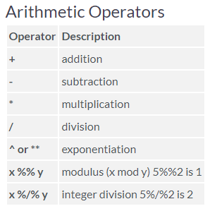
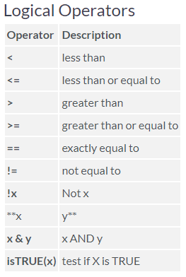

5 Operações Básicas e Funções Matemáticas


No R, as operações aritméticas são definidas de maneira intuitiva.
# aritmética
l<-23
l^2+2*l## [1] 5753*2+2## [1] 83*(2+2)## [1] 123/2## [1] 1.5Mais operações matemáticas são listadas aqui.
Além disso, diversas funções matemáticas são pré-definidas no R.# Arredondar (duas casas decimais)
round(17/3,2)## [1] 5.67# seno, cosseno, tangente, arco-tangente, tengente hiperbólica
sin(pi);cos(pi);tan(pi);atan(0.5);tanh(0.5)## [1] 1.224606e-16## [1] -1## [1] -1.224647e-16## [1] 0.4636476## [1] 0.4621172# raiz quadrado, exponencial, log natural, log na base 10 e módulo
sqrt(4);exp(2);log(10);log10(10);abs(-6.5)## [1] 2## [1] 7.389056## [1] 2.302585## [1] 1## [1] 6.5Por sua vez, comparações e controle de fluxo dependem de operadores lógicos, ou seja, que resultam em TRUE ou FALSE. Observe que “==” não é um comando de atribuição, mas trata-se de uma comparação lógica de igualdade. Com comandos lógicos, também é possível estabelecer a união e a interseção entre conjuntos: “(cond. 1)&(cond. 2)” será verdade (TRUE) apenas se as condições 1 e 2 forem satisfeitas simultaneamente; por outro lado, “(cond. 1)|(cond. 2)” será verdade se a condição 1 ou a condição 2 (ou ambas) forem satisfeitas.
# Exemplo 1
nome <- "José"
# A variável é um número?
is.numeric(nome)## [1] FALSE# A variável é um caracter?
is.character(nome)## [1] TRUE# Exemplo 2
l<-1
# A variável é igual a 23?
l==23## [1] FALSE# A variável é menor do que 15?
l<15## [1] TRUE# A variável é menor do que 23
l<=23## [1] TRUE# atribuição (nova variável)
a<-17
# condição 1 E condição 2
(a<15)&(l>23)## [1] FALSE(a<15)&(l>=23)## [1] FALSE# condição 1 OU condição 2
(a<15)|(l>23)## [1] FALSE(a<15)|(l>=23)## [1] FALSE5.1 Principais estruturas de dados
5.1.1 Vetores
Vetor é o tipo de estrutura de dados mais simples. Trata-se de uma sequência de “valores” a serem armazenados na memória do computador. Observe que tais valores não são necessariamente números, mas podem ser nomes e/ou categorias ou valores lógicos (TRUE ou FALSE). Cada elemento de um vetor é um componente.
Uma lista pode ser construída a partir da combinação de elementos do mesmo tipo, através do comando (combine). Sua sintaxe é c(element 1, element 2, …) . Observe que os elementos são separados por vírgulas. Se os elementos forem números decimais, as unidades e os decimais serão separados por pontos, como na Língua Inglesa.
# Vetor c/ números inteiros de 1 a 10
v<-c(1,2,3,4,5,6,7,8,9,10)
# Impressão do vetor armazenado
print(v)## [1] 1 2 3 4 5 6 7 8 9 10# Quinto elemento do vetor
v[5]## [1] 5# Vetor c/ nomes dos alunos
nomes<-c("Raul","Zulmira","Edmilson","Jaquelina","Gabriela","Hudson")
# Impressão do vetor armazenado
nomes## [1] "Raul" "Zulmira" "Edmilson" "Jaquelina" "Gabriela" "Hudson"# Obs: Nomes e rótulos sempre devem ser incluídos com aspas duplas. # Vetor com valores lógicos
# Quais elementos de v são divisíveis por 2?
v%%2## [1] 1 0 1 0 1 0 1 0 1 0# Observe que o operador %% indica a divisibilidade
# (0 = não divisível / 1 = divisível)
as.logical(v%%2)## [1] TRUE FALSE TRUE FALSE TRUE FALSE TRUE FALSE TRUE FALSE# Aqui os valores foram transformados em variáveis lógicas
# (i.e. TRUE = Verdadeiro = 1; FALSE = Falso = 0)Quando digitamos vetor[2], o número disposto entre colchetes é uma subscrição. A subscrição indica a posição de um dado dentro de uma estrutura de dados. Obviamente, a subscrição é um número inteiro e dentro dos limites de tamanho da lista. A subscrição/índice varia de 1 até N, em que N é o número de elementos na lista.
Diversas operações com vetores e entre vetores e matrizes são pré-definidas no R. No exemplo abaixo, identifique a diferença entre o produto ponto-a-ponto e a multiplicação escalar (produto interno).
# Definição de dois vetores quaisquer
v <- c(12,3,4,25,7,8)
r <- c(13,15,4,21,2,3)
# Comprimento de um vetor
length(v)## [1] 6# Multiplicação ponto-a-ponto
v*r## [1] 156 45 16 525 14 24# Produto escalar <v,r>
v%*%r## [,1]
## [1,] 7805.1.2 Arrays ou matrizes
Arrays e matrizes são estruturas de dados bidimensionais, cujas as entradas apresentam subscrições para as linhas e colunas.
# Criando um banco de dados
dados<-data.frame(v,r)
# Leitura das 3 linhas iniciais
head(dados,3)## v r
## 1 12 13
## 2 3 15
## 3 4 4# acessando a coluna "v" do banco de dados
dados$v## [1] 12 3 4 25 7 8# Acessando o elemento da linha 3 e coluna 2
dados[3,2]## [1] 4# Dimenões do banco de dados
dim(dados)## [1] 6 2No exemplo abaixo, definimos uma matriz com 3 linhas (nr = number of lines) e cujo preenchimento segue a ordem das colunas (byrow = FALSE). Diversas operações matriciais são possíveis, tais como: transposição, inversão, multiplicação, cálculo de autovalores, autovetores e determinantes. Essas operações têm grande relevância na Estatística.
# Definindo a matriz
A<-matrix(c(2,3,4,5,6,7),nr=3,byrow=FALSE)
A## [,1] [,2]
## [1,] 2 5
## [2,] 3 6
## [3,] 4 7# Obtenção da transposta
t(A)## [,1] [,2] [,3]
## [1,] 2 3 4
## [2,] 5 6 7# Definindo outra matriz
B<-matrix(c(2,3,4,5,6,7,8,9,10),nr=3,byrow=FALSE)
B## [,1] [,2] [,3]
## [1,] 2 5 8
## [2,] 3 6 9
## [3,] 4 7 10# Cálculo do determinante
det(B)## [1] 0# Tentativa - Cálculo da Inversa
try(solve(B))## Error in solve.default(B) :
## Lapack routine dgesv: system is exactly singular: U[3,3] = 0# Nova matriz
B2<-matrix(c(2,3,28,5,6,12,8,9,5),nr=3,byrow=FALSE)
det(B2)## [1] -27solve(B2)## [,1] [,2] [,3]
## [1,] 2.888889 -2.629630 0.1111111
## [2,] -8.777778 7.925926 -0.2222222
## [3,] 4.888889 -4.296296 0.1111111# multiplicação ponto-a-ponto
B*B2## [,1] [,2] [,3]
## [1,] 4 25 64
## [2,] 9 36 81
## [3,] 112 84 50# multiplicação matricial
B%*%B2## [,1] [,2] [,3]
## [1,] 243 136 101
## [2,] 276 159 123
## [3,] 309 182 1455.2 UFSCar Lagoa do Sino
This is a sample book written in Markdown. You can use anything that Pandoc’s Markdown supports; for example, a math equation \(a^2 + b^2 = c^2\).
5.5 Usage
Each bookdown chapter is an .Rmd file, and each .Rmd file can contain one (and only one) chapter. A chapter must start with a first-level heading: # A good chapter, and can contain one (and only one) first-level heading.
Use second-level and higher headings within chapters like: ## A short section or ### An even shorter section.
The index.Rmd file is required, and is also your first book chapter. It will be the homepage when you render the book.
5.6 Render book
You can render the HTML version of this example book without changing anything:
Find the Build pane in the RStudio IDE, and
Click on Build Book, then select your output format, or select “All formats” if you’d like to use multiple formats from the same book source files.
Or build the book from the R console:{r, eval=FALSE} bookdown::render_book()
To render this example to PDF as a bookdown::pdf_book, you’ll need to install XeLaTeX. You are recommended to install TinyTeX (which includes XeLaTeX): https://yihui.org/tinytex/.
5.7 Preview book
As you work, you may start a local server to live preview this HTML book. This preview will update as you edit the book when you save individual .Rmd files. You can start the server in a work session by using the RStudio add-in “Preview book”, or from the R console:
bookdown::serve_book()